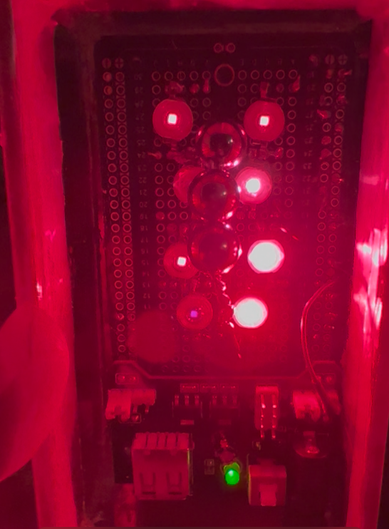

Mirror Architecture, B.A.S.I.S., BioAI, or Quantum Access identifies a relation, workflow, or measurement problem worth testing.
Complete program arc
From a supported map to an instrumented decision.
Software, sensors, circuits, bench hardware, edge compute, and operator workflows turn the target into something observable.
Target, off-target, source-off, randomized, shuffled, baseline, or domain-specific controls define what the build has actually shown.
The receipt records the result, its limits, and the next gate. A physical build is not promoted into a validated effect without that measurement.
Translation rule
Build, instrument, compare, repeat.
Create the interface, device, bench rig, sensor stack, circuit adapter, or workflow needed to expose the target.
Use timestamps, waveforms, spectra, device state, signal quality, runtime events, and source-resolved observations.
Run the same machinery against controls and alternative explanations before assigning support.
Advance only when the result survives repeated runs, preserved settings, and a reviewable evidence trail.
Physical build lineage
Built hardware, with the measurement boundary kept visible.
Infrared / sensing build

PulsarTek IR v.67
A physical pulsed-infrared support build with board, LED-array, timing, and control lineage. The unit exists; biological efficacy remains a separate controlled-validation question.
Array / waveform build

ARC15
The 15-sphere expansion of the FG200.67 lineage. Its rig geometry, target frequencies, oscilloscope channels, and control plan are documented; repeated waveform and spectral closeout remains open.
Predecessor rig
FG200.67
The earlier field-chamber and sphere-array build that led into ARC15. Historical operation and observations are preserved as lineage, while mechanism and effect remain measurement questions.
Documented field report
Midnight Protocol
A preserved animal recovery chronology connected to the PulsarTek support lineage. It is a structured field report and research prompt—not clinical proof or a replacement for veterinary care.
Open repositoryBuild families
The translation layer spans software, hardware, and deployment.
Biosignal and medical-device systems
Sensor adapters, synchronized capture, quality guards, local review surfaces, and evidence packets extend B.A.S.I.S. into testable partner workflows.
Private, edge, and offline AI
Customer-controlled compute, dedicated servers, embedded systems, and cloud-free operation carry the AI state layer into real operational boundaries.
Circuits and quantum backends
Measured feature states can be packaged for circuit encodings, emulator gates, and approved hardware tests with carrier-specific receipts.
Materials and field instrumentation
Bench rigs, spectra, formation-energy data, environmental sensing, and physical-response tests remain separate lanes with their own controls.
Evidence boundary
Current support: real builds, real capture surfaces, and defined test gates.
The hardware lineage, live B.A.S.I.S. capture, circuit adapters, local AI systems, and bench protocols are real build surfaces. They do not by themselves establish a biological effect, field mechanism, clinical result, environmental outcome, or production readiness. Each result must come from the instrumented protocol assigned to that build.
Next gate
Choose one build, freeze its geometry and operating settings, run repeated target and control sessions, export the measured rows, and let the receipt decide whether the lane advances.
Partner build
Bring a defined research target or a system that needs to be instrumented.
Renaissance Field Lite can design the prototype, connect it to existing infrastructure, or build a new local, edge, cloud, or offline test surface around the evidence gate.